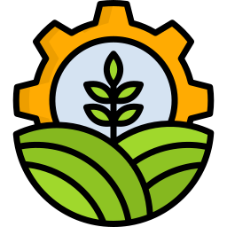

O que é a sustentabilidade?Sustentabilidade é viver e organizar a sociedade de modo que as necessidades do presente sejam atendidas sem prejudicar a capacidade das próximas gerações de fazer o mesmo. Envolve equilibrar cuidados com o meio ambiente, justiça social e viabilidade econômica: conservar água, solo e biodiversidade; garantir condições dignas e equitativas para as pessoas; e manter atividades produtivas que perdurem no tempo. Na prática, passa por escolhas e sistemas mais eficientes — reduzir desperdício, reaproveitar recursos, usar energia com responsabilidade e apoiar cadeias produtivas que respeitem pessoas e ecossistemas. Não é um ideal distante, mas um conjunto de práticas e políticas que tornam possível um desenvolvimento estável e menos dependente da exploração contínua de recursos.
|
Como unir a sustentabilidade ao AgroSUnir sustentabilidade ao agro é fazer o campo produzir bem hoje sem acabar com os recursos amanhã. É adotar práticas que protejam solo, água e vida selvagem, como variar culturas, reduzir o revolvimento do solo, usar adubo e cobertura vegetal. E ao mesmo tempo aproveitar tecnologia simples e acessível. É também valorizar o saber do produtor, diversificar a produção para diminuir riscos e reduzir perdas na colheita. Funciona melhor quando há apoio (crédito, assistência técnica) e quando a comunidade (produtores, jovens e escolas) participa e aprende com os resultados. No fim, é ter um campo mais resistente e rentável que cuida do ambiente e garante futuro para quem vive dele.
|
 |
Objetivos
|